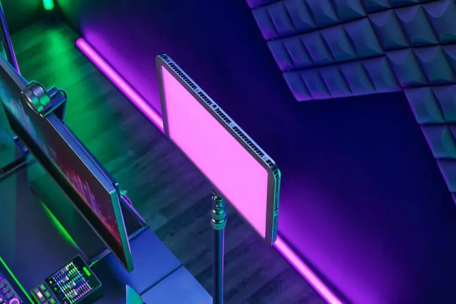
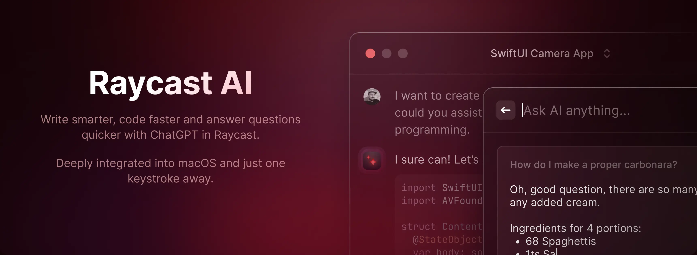
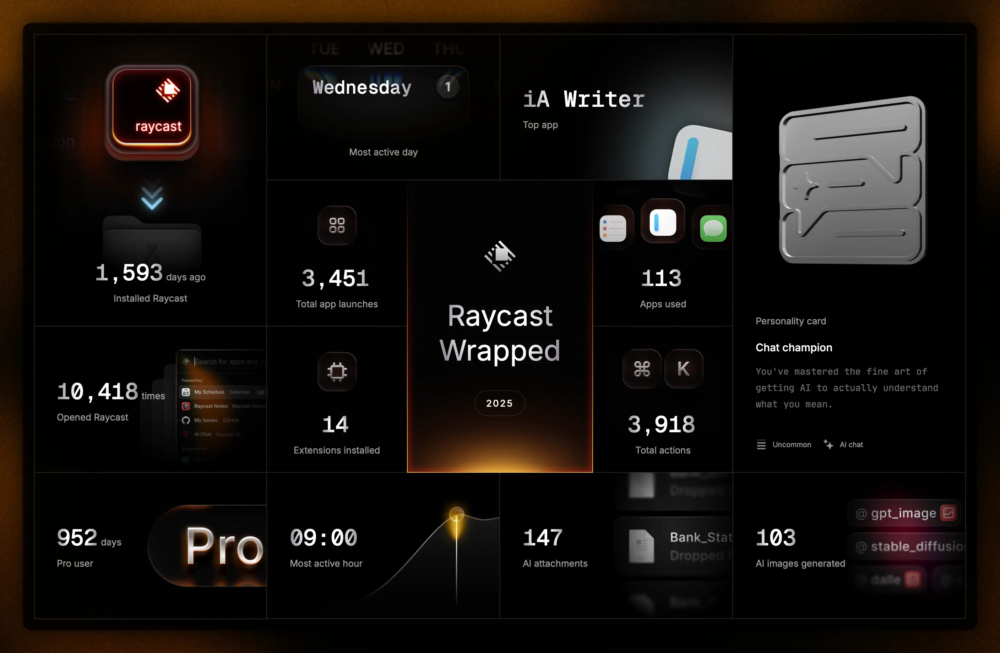
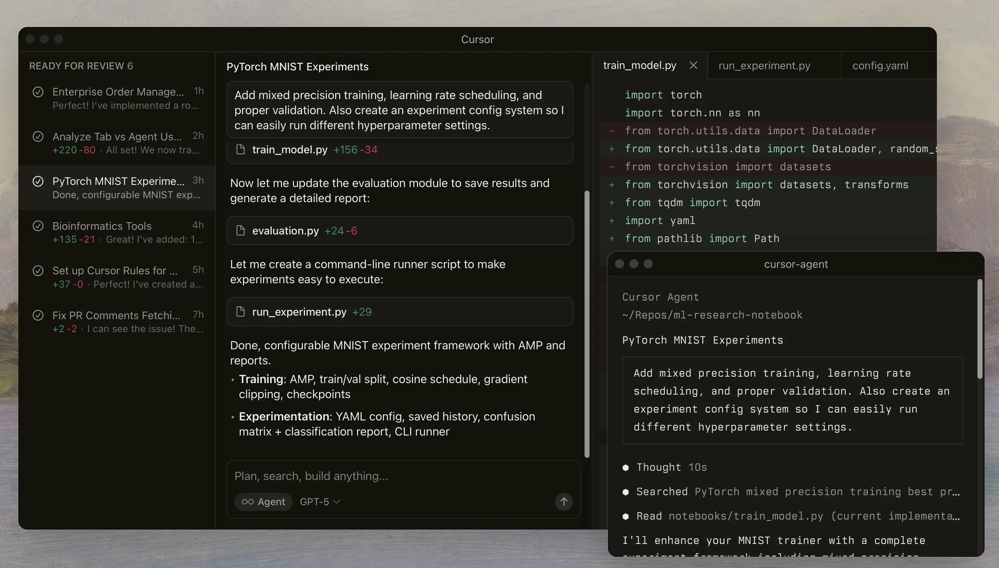
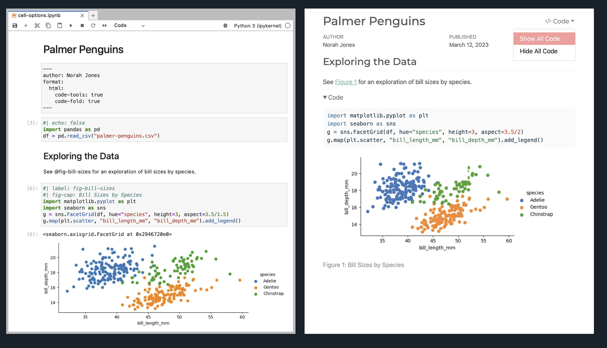
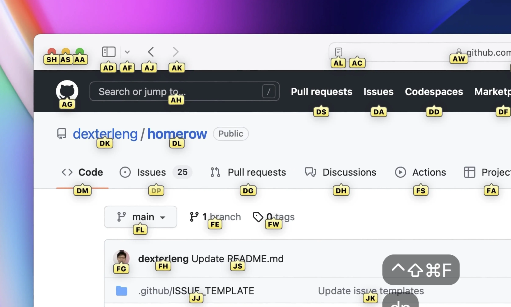
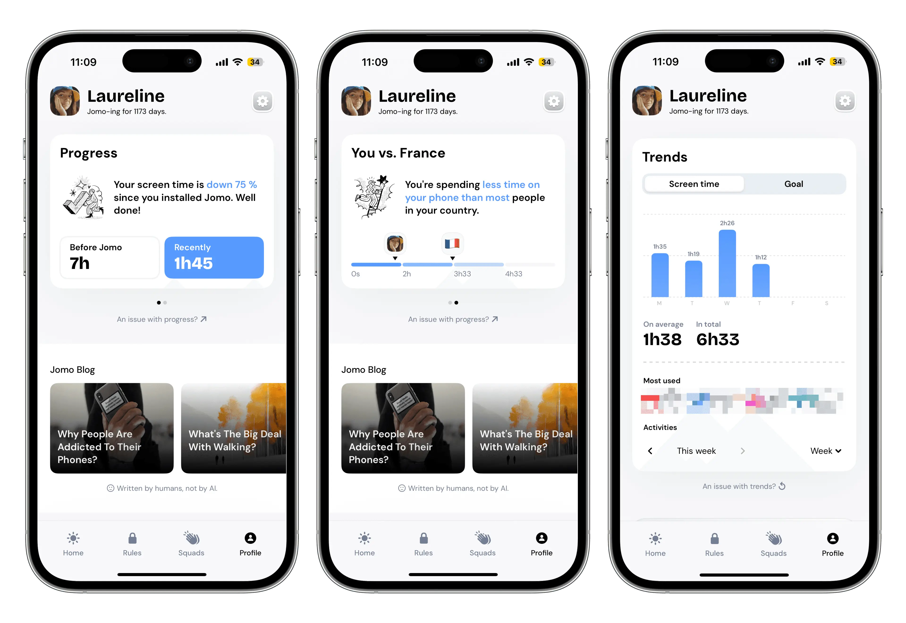

Last updated: 2025-12-14
This is the list of “interesting” hardware and software I regularly use. Apart from these, I run the basic set of Apple products, their built-in apps and iCloud.
Hardware
Dygma Defy

Split orthogonal mechanical keyboard with extra thumb keys. Great for reducing wrist strain and improving shoulder position while typing. It took a few weeks to get used to the split and orthogonal layout, but now it’s become second nature. I use it with both Mac and Windows machines and have programmed different layers to unify the shortcuts.
Logitech MX Ergo S

I used to suffer from wrist pain from using a traditional mouse, but after switching to the MX Ergo, the issues have almost disappeared. The extra buttons are programmable. I even use it for gaming now, apart from shooting games.
Sennheiser HDB 630

These wireless ANC headphones deliver audiophile sound quality. They come with the BTD 700 Bluetooth dongle that enables devices to use bluetooth codecs like aptX HD and aptX Adaptive. The ANC isn’t quite as good as the best from Sony or the Apple AirPods Pro.
Razer Keylight Chroma

I use two of these keylights set to maximum brightness as an alternative to a SAD light in winter. My wife says my mood is noticeably better when I use them. They’re also great for video calls, where the right lighting often makes as much of a difference as the webcam itself. The RGB colors are fun but I rarely use them.
Software (macOS and iOS)
Raycast


Raycast is an app launcher that has turned into a massive collection of useful tools and an AI assistant. I use it on Mac, iOS and Windows. New AI models are usually added shortly after release. I’ve set up several system prompts and tool configurations for different tasks. Raycast also supports connecting to MCP Servers, which I’ve used to run a custom NetNewsWire connector. The second image shows my Raycast Wrapped for 2025.
Cursor

Cursor has impressed me with its AI-first features and responsiveness that GitHub Copilot doesn’t match. Coding agents rapidly execute tool calls and have access to a visual browser right in the IDE. Cursor also lets you send off multiple agents at once and compare their results. While I heavily use Cursor for coding, the words you read on this website are all my own.
Quarto

Quarto is a scientific publishing system that I use to create this website, my personal wiki and write papers. It lets you seamlessly mix text, code, formulas and visualizations. Previously I’ve also used it to run automated report generation for market research projects.
ia Writer

A minimalist markdown editor that I use for journaling and writing blog posts that don’t involve code. It doesn’t have distracting features and launches instantly when I type ia + enter into Raycast. The custom semi-monospaced font give it a unique, understated look. Sometimes I also use its grammatical highlighting feature to hunt for unnecessary adjectives.
NetNewsWire

NetNewsWire is the best RSS reader for macOS and iOS. It’s fast, has a clean UI, supports many feeds and syncs via iCloud. It’s almost unbelievable that it’s completely free. I’ve set up a workflow that syncs its database to a vector database and exposes it as an MCP Server, which I can then query with Raycast. If you’re looking for blogs to read, check my blogroll.
Homerow

Homerow is a unique way to keep your hands on the keyboard rather than reaching for your mouse. After tapping a hotkey, every clickable element on screen gets labeled with a two or three letter code. You can type the code to click the element. It’s not as good as learning keyboard shortcuts and doesn’t handle every situation where you’d use a mouse, but greatly reduces the number of mouse pickups.
Hevy

Hevy is a great app for tracking strength training. It lets me track my lifts, sets and reps, and see my progress over time. It generates monthly and yearly summaries. In addition to the iOS app, it also has a web version and lets you export your data to CSV. I’ve disabled all social features.
Jomo

Jomo is an app to deliberately cripple your technology to stay in control of your screen time. I’ve set up rules on Mac and iOS that block social media apps at night and during workdays. Jomo also supports rule exceptions, but asks you to complete a challenge first, such as retyping a sequence of characters or facing yourself with the front camera. A little friction goes a long way in resisting small temptations.
The images from this page are copied from the respective marketing materials. If you are the owner of an image and would like it removed or exchanged, please contact me at paul@simmering.dev.